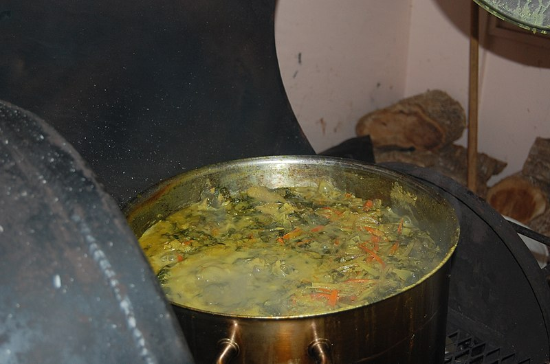

Oil Down

Oil down is a stew of breadfruit, salted meat, chicken, dumplings, callaloo, and other vegetables stewed in coconut milk, herbs, and spices.
The name refers to the fact that the oil from the coconut milk used in cooking is either absorbed by the ingredients or settles to the bottom of the cooking pot. All of the liquid is cooked down (dried out), hence the name oil down.
The term "oil down" is also used for a traditional neighborhood party at which the stew is prepared and eaten. Traditionally it is the men who cook the oil down at such parties. Oil down is also very popular in local restaurants.
Ingredients
- 8-10 young dasheen leaves (calallo)
- 1 sprig chive and thyme
- 2 medium carrots, chopped
- 1 scotch bonnet (or habenero) pepper
- 1 lb (450g) dumplings
- 2 tsp turmeric (saffron)
- 1/2 lb (225g) salt meat (pre-soaked overnight)
- 1 large breadfruit, peeled
- 2 cups (460 ml) coconut milk
- 1 medium onion, chopped
Directions
- Prepare the ingredients. Peel the breadfruit and slice into eight sections. Remove the center from each and then cut in half.
- Thoroughly wash and scrape the salted meat and cut into pieces.
- Chop up the onion and the carrots. Then, coarsely chop up the dasheen leaves and mince the chives.
- Place the salted meat in cold water and bring to a boil. Rinse, then repeat three times. This procedure will remove the excess salt. Drain once the meat has become tender.
- Sauté the onions in hot oil until they turn yellow and combine the turmeric with coconut milk.
- Place all the ingredients in the pot. Breadfruit and meat on the bottom, vegetables in the middle, and callalo leaves with dumplings on the top. Fill to the brim with water and coconut milk.
- Bring to a boil and then simmer for an hour or until all the liquid has absorbed.
- When done, remove the pepper.
- Serve hot.
Return to homepage